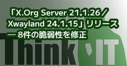
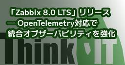
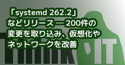

Think IT（シンクイット）
https://thinkit.co.jp/
【Think IT】“オープンソース技術の実践活用メディア” をスローガンに、インプレスグループが運営するエンジニアのための技術解説サイト。開発の現場で役立つノウハウ記事を毎日公開しています。
フィード

「X.Org Server 21.1.26／Xwayland 24.1.15」リリース ─ 8件の脆弱性を修正
Think IT（シンクイット）
「X.Org Server 21.1.26／Xwayland 24.1.15」リリース ─ 8件の脆弱性を修正 境界外書き込みや整数オーバーフローに対処、メモリ破壊や情報漏洩を防止kawahara2026年11月15日シェア ポスト はてブ 優先するニュース提供元に追加 X.Org Projectは11月10日(現地時間)、X Window Systemのディスプレイサーバ「X.Org Server 21.1.26」、およびWayland環境でX11アプリケーションを動作させる「Xwayland 24.1.15」をリリースした。 X.Org Serverは、LinuxやBSDなどで広く利用されるX11ディスプレイサーバ。XwaylandはX.Org Serverのコードを基盤とし、Waylandコンポジター上で従来のX11アプリケーションとの互換性を提供する。 「X.Org Server 21.1.26」と「Xwayland 24.1.15」のハイライトは次の通り。 X.Org Server／Xwaylandは、Webサイトからダウンロードできる。(川原 龍人/びぎねっと)[関連リンク]リリースアナウンス(X.Org Server 21.1.26)リリースアナウンス(Xwayland 24.1.15) この記事をシェアしてください シェアする ポストする >ブクマする noteで書く 優先するニュース提供元にThink ITを追加 前の記事「Red Hat Enterprise Linux 10.3／9.9」リリース ─ Sealed ImagesとMCPサーバーを正式提供 関連記事この記事の筆者 kawahara kawaharaのプロフィールを見る 筆者の人気記事 Linuxカーネルに重要な脆弱性「CVE-2026-98432」─ IPv4経由で遠隔DoSのおそれ10月31日 0:54 「Apache HTTP Server 2.4.69」リリース ─ 20件の脆弱性を修正10月3日 23:23 「Python 3.15.2/3.14.10/3.13.18/3.12.16/3.11.18」リリース ─ 侵害されたeMudhraのCA鍵をブロック10月26日 16:52 「PHP 8.5.12」など4系列を緊急リリース ─ CriticalのRCE脆弱性2件を修正
2時間前
MySQLの「ST_GeometryType()」「ST_IsValid()」などの関数でジオメトリデータの情報を取り出してみよう
Think IT（シンクイット）
MySQLの「ST_GeometryType()」「ST_IsValid()」などの関数でジオメトリデータの情報を取り出してみようitoh2026年11月13日MySQLで学ぶGIS入門シェア ポスト はてブ 優先するニュース提供元に追加 はじめに地理情報データは、MySQLの中にバイナリで格納されています。「ST_GeomFromText()で登録して、ST_AsText()で取り出す」という一手間を、ここまで何回も繰り返してきました。これら以外にも、MySQLにはデータの特徴を知る関数がたくさんあります。今回は地理情報データとさらに親密になれる、そういった関数群を紹介します。今回紹介する関数今回は、以下の関数を紹介します。 ST_GeometryType(g) ジオメトリの種類 ST_SRID(g) 空間参照系のID ST_Dimension(g) 図形の次元 ST_Latitude(p) 点の緯度 ST_Longitude(p) 点の経度 ST_X(p) 点のX座標 ST_Y(p) 点のY座標 ST_NumPoints(g) 図形を構成する点の数 ST_IsValid(g) 図形として壊れていないか ST_IsClosed(g) 始点と終点が一致しているかそれぞれの関数は、POLYGONだけに使えるもの、LINESTRINGだけに使えるもの、POINTだけに使えるものなどがあり、また、平面のみを対象にした関数もあります。順にこれらの関数の動作を見ていきましょう。実験用のデータを用意するいろいろな種類のジオメトリを並べて試すために、実験用のテーブルを作ります。実務では、1つの列にさまざまなジオメトリタイプを混ぜて入れることはお勧めできませんが、今回は関数の効き方を見比べる目的で、あえてSRIDを指定したものと指定しないもの(SRID 0)を組み合わせて登録します。mysql> CREATE TABLE g30 ( -> id INTEGER PRIMARY KEY, -> memo VARCHAR(20), -> geom GEOMETRY);Query OK, 0 rows affected (0.183 sec)mysql> INSERT INTO g30 VALUES (1, 'point_non_srs', ST_GeomFromText('POINT(
2日前
デジタル主権時代、データとモデルの持ち方は企業が主体的に定める
Think IT（シンクイット）
デジタル主権時代、データとモデルの持ち方は企業が主体的に定めるitoh2026年11月13日「インプレス AI Days 2026」レポートシェア ポスト はてブ 優先するニュース提供元に追加 Sponsored by: Cohere Inc.提供：Cohere Inc.生成AI(人工知能)の開発競争が米中二強体制に傾く中、企業が自社のデータとインフラの上でAI技術を安全にコントロールする「ソブリンAI」の重要性が増している。カナダ発のAIスタートアップであるCohere日本法人でカントリーマネージャーを務める趙 顕周 氏が「インプレス AI Days 2026」(主催：インプレス、2026年9月15日〜16日)に登壇し、国内企業のAI活用の課題と、ソブリンAI基盤が満たすべき条件を解説した。「AI(人工知能)技術はもはや、国家安全保障や経済安全保障に直結し、さらには外交カードとなり得る。市場の関心は、AIをいかにコントロールしていくかへと大きくシフトしている」--。カナダCohere日本法人 カントリーマネージャーの趙 顕周 氏はこう指摘する(写真1)。 写真1：カナダCohere日本法人 カントリーマネージャーの趙 顕周 氏WEF(世界経済フォーラム)年次総会である通称「ダボス会議」や、「G7(主要7カ国首脳会議)」といった国際会議でAI技術が主要議題に挙がる中、趙氏が説くのはAI主権、すなわち「デジタル主権」の重要性だ。国家がサプライチェーンのリスクに備えて代替策を用意するのと同じく「企業もAI技術をどこまで自社でコントロールするかを意図的に選ぶ時代が来ている」(同)という。米中二強に対抗する“第三極”の選択肢を目指すCohereは、カナダ・トロントに本社を置く2019年設立のAIスタートアップであり、LLM(Large Language Model：大規模言語モデル)を自社開発する数少ない企業の1社だ。共同創業者でCEO(最高経営責任者)のエイダン・ゴメス(Aidan Gomez)氏は、現在の生成AI技術の基礎となった「Transformer(トランスフォーマー)アーキテクチャー」を提唱した論文の共同執筆者の1人である。同社が事業の軸に据えるのは、国家や企業が巨大テック企業に依存せずに独立したAIを運用する「ソブリンAI」の普及だ(図1)。2026年4月には
2日前
「Red Hat Enterprise Linux 10.3／9.9」リリース ─ Sealed ImagesとMCPサーバーを正式提供
Think IT（シンクイット）
「Red Hat Enterprise Linux 10.3／9.9」リリース ─ Sealed ImagesとMCPサーバーを正式提供 RHEL 9.9から10.3へのLeapp更新に対応、GCC 16やNode.js 26なども収録kawahara2026年11月12日シェア ポスト はてブ 優先するニュース提供元に追加 Red Hatは11月11日(現地時間)、「Red Hat Enterprise Linux(RHEL) 10.3」と「RHEL 9.9」をリリースした。 RHEL 10.3と9.9は、それぞれRHEL 10系と9系の正式なマイナーリリース。セキュリティとAIを利用した運用支援を中心に機能を強化し、コンパイラやプログラミング言語、Web開発環境も更新した。 ハイライトは次の通り。 Sealed Imagesは、利用者が管理するSecure Boot鍵を使い、OSの起動経路とルートファイルシステムを検証する機能。ルートファイルシステムを読み取り専用とし、署名された状態から改変された内容をカーネルが読み出し時に拒否する。多数のシステムへ同一のOSイメージを展開する環境や、厳格な監査が必要な環境での利用を想定している。 MCP Server for RHELは、AIアシスタントからRHELのシステム情報へ接続するための基盤。RHEL ExtensionsリポジトリのRPMとして提供され、オープンソースのAIコマンドラインエージェント「goose」とともにdnfで導入できる。Performance Co-Pilotが保存した過去の性能データを分析し、断続的に発生する障害の原因調査を支援する。 Red Hat Enterprise Linuxは、Red Hat Customer Portalから入手できる。利用には有効なサブスクリプションが必要で、RHEL 10.3については60日間の試用版も用意されている。(川原 龍人/びぎねっと)[関連リンク]リリースアナウンスRHEL 10.3リリースノートRHEL 9.9リリースノート この記事をシェアしてください シェアする ポストする >ブクマする noteで書く 優先するニュース提供元にThink ITを追加 前の記事「Tails 7.17」リリース ─ Tor Browser 16.0.1を収録 次の記事
2日前

【AIとの共創】企業の強みが新しいサービスに変わる
Think IT（シンクイット）
【AIとの共創】企業の強みが新しいサービスに変わるkaoringo2026年11月12日Gen AI Timesシェア ポスト はてブ 優先するニュース提供元に追加 本連載は、生成AIコミュニティ「IKIGAI lab.」で活動するメンバーが、それぞれの専門領域で培ってきた知見を持ち寄りながら、生成AIを取り巻く動向を技術・ビジネス・ガバナンスの観点から整理しお届けしています。はじめに銀行のアプリを開いたものの、目的の手続きがどこにあるのか分からない。新商品のアイデアを考えても、どんな人に喜ばれるのか見通せない。便利なサービスが増えても、私たちの日常にはまだ小さな行き詰まりがあります。もし、やりたいことを言葉にするだけで必要な画面につながったり、企画の段階でさまざまな生活者の反応を検討できたりしたら、どうでしょうか。生成AIの活用は、メールの下書きや資料の要約といった業務効率化から、サービスの使い方や価値の届け方を変える取り組みへと広がっています。その鍵になるのが、企業が培ってきた顧客接点、データ、専門知識との組み合わせです。今回は企業における生成AIとの共創事例を5つ取り上げます。それぞれの企業がAIに何を掛け合わせ、どのような価値を生み出そうとしているのかを見ていきましょう。広がるAIとの掛け合わせ！企業の最新活用事例Amazon：生活の入口を、自然な会話に変えるAmazonは2026年10月29日、生成AIを搭載した次世代アシスタント「Alexa+」の国内早期アクセスを開始しました。自然な会話を通じて、ショッピング、音楽、スケジュール管理などを支援します。生成AIの会話能力に、Alexaが担ってきた家庭内の音声接点と生活関連サービスを組み合わせる取り組みです。利用者の意図をくみ取れるようになれば、機能に合わせた命令を覚える負担が減り、会話しながら用事を進められます。早期アクセス終了後もプライム会員には追加料金なしで提供されるため、既存会員サービスの価値を高める役割も期待できます。ただし、基準日時点では早期アクセスです。レストラン予約は今後の提供予定であり、発表された構想のすべてが国内で利用できるわけではありません。【出典】「Amazon、生成AI搭載の次世代パーソナルアシスタント、「Alexa+」を国内で提供開始」(Amazon 2026/10/29)ドコモS
3日前
「Proxmox VE」のVMとLXCの違いを理解して仮想マシンを作成してみよう 1
1
Think IT（シンクイット）
「Proxmox VE」のVMとLXCの違いを理解して仮想マシンを作成してみようitoh2026年11月12日現場エンジニアのための「Proxmox VE」活用術シェア ポスト はてブ 優先するニュース提供元に追加 はじめに前回は、「Proxmox VE」ホストのアップデート方法と、その理解に必要なパッケージ、カーネル、リポジトリについて解説しました。実際の構築ではホストを最新の状態にしたら、ネットワークやストレージの設定を行うことが多いと思いますが、今回はとりあえず使ってみることを優先し、Proxmox VE上で動作する仮想マシン(VM)やLinuxコンテナ(LXC)を設定・実行していきます。そのため、今回はProxmox VEで利用できるVMとLXCの違いや、VMを新規作成する際のポイントについて解説していきます。Proxmox VEのVM・LXCとはProxmox VEでは、仮想マシン(VM)とLinuxコンテナ(LXC)を作成できます。VMは仮想的なCPU、メモリ、ディスク、ネットワークを用意し、その上でゲストOSを動かす仕組みです。ゲストOSから見ると1台の独立したコンピューターのように見えるため、LinuxだけでなくWindowsのようなLinux以外のOSも動かせます。一方、LXCはホストのLinuxカーネルを共有しながら、分離されたLinux環境を動かす仕組みです。VMより軽量ですが、利用できるOSはLinux環境に限られます。大まかには、次のように考えると分かりやすいです。VM：仮想的なコンピューターを作る仕組みLXC：Linux上に分離された実行環境を作る仕組みVMwareから移行する場合はVMの利用が中心となるため、本連載ではVMを中心に解説します。 VMとLXCの違いVMとLXCの大きな違いは「ゲストOSが独自のカーネルを持つかどうか」です。VMでは、仮想ハードウェア上でゲストOSを起動します。ゲストOSは独自のカーネルを持つため、ホストとは独立したOS環境として動作します。LXCでは、DebianやUbuntuなどのLinuxディストリビューションのユーザーランドを分離しますが、Linuxカーネルはホストと共有します。そのためディスクサイズが小さく軽量で起動も速い一方、WindowsのようにLinuxカーネル以外を必要とするOSは動かせませ
3日前
「Tails 7.17」リリース ─ Tor Browser 16.0.1を収録
Think IT（シンクイット）
「Tails 7.17」リリース ─ Tor Browser 16.0.1を収録 Firefox ESRの脆弱性81件を修正、Tor 0.4.9.16とLinux 6.12.116へ更新kawahara2026年11月12日シェア ポスト はてブ 優先するニュース提供元に追加 Tails開発チームは11月11日(現地時間)、匿名性とプライバシー保護を重視したLinuxディストリビューション「Tails 7.17」をリリースした。 「Tails」は、インターネット通信をTorネットワーク経由で行い、利用したコンピューターへ可能な限り痕跡を残さないことを目的とするライブLinuxディストリビューション。USBメモリなどから起動でき、必要なデータや設定は暗号化されたPersistent Storageへ保存できる。 「Tails 7.17」のハイライトは次の通り。 Tor Browser 16.0.1はFirefox ESR 153.7.0を基盤とし、Mozillaのセキュリティアドバイザリに掲載された81件の脆弱性を修正した。このうち51件は重要度が「高」、21件は「中」、9件は「低」と評価されている。 Tailsは、Webサイトから入手できる。(川原 龍人/びぎねっと)[関連リンク]リリースアナウンスBlogによる記事 この記事をシェアしてください シェアする ポストする >ブクマする noteで書く 優先するニュース提供元にThink ITを追加 前の記事「OpenVPN 2.7.9」リリース ─ 対話型サービスやDLL読み込みを強化 次の記事「Red Hat Enterprise Linux 10.3／9.9」リリース ─ Sealed ImagesとMCPサーバーを正式提供 関連記事この記事の筆者 kawahara kawaharaのプロフィールを見る 筆者の人気記事 Linuxカーネルに重要な脆弱性「CVE-2026-98432」─ IPv4経由で遠隔DoSのおそれ10月31日 0:54 「Apache HTTP Server 2.4.69」リリース ─ 20件の脆弱性を修正10月3日 23:23 「Python 3.15.2/3.14.10/3.13.18/3.12.16/3.11.18」リリース ─ 侵害されたeMudhraのCA鍵をブロック10月26日
3日前
「OpenVPN 2.7.9」リリース ─ 対話型サービスやDLL読み込みを強化
Think IT（シンクイット）
「OpenVPN 2.7.9」リリース ─ 対話型サービスやDLL読み込みを強化 Linuxのtun／tap処理を改善、2件の脆弱性を修正kawahara2026年11月11日シェア ポスト はてブ 優先するニュース提供元に追加 OpenVPN Community Projectは11月5日(現地時間)、オープンソースのVPNソフトウェア「OpenVPN 2.7.9」をリリースした。 「OpenVPN」は、SSL／TLSを利用して安全な通信経路を構築するVPNソフトウェア。クライアント／サーバー型のVPNや拠点間接続などに利用でき、Windows、Linux、BSD、macOSなどのプラットフォームに対応する。 「OpenVPN 2.7.9」のハイライトは次の通り。 Linuxでは、利用可能な環境でtun／tapインターフェースへ「IFF_BACKPRESSURE」フラグを設定するようになった。ユーザ空間側の処理が遅れた場合にも、カーネルが受信パケットを一律に破棄せず、キューイング規則に基づいて優先順位を適用しやすくなる。 「OpenVPN Community Edition」は、Webサイトから入手できる。(川原 龍人/びぎねっと)[関連リンク]リリースノート この記事をシェアしてください シェアする ポストする >ブクマする noteで書く 優先するニュース提供元にThink ITを追加 前の記事「Linux Lite 8.2」リリース ─ Linux 7.3ベースの独自カーネルを採用 次の記事「Tails 7.17」リリース ─ Tor Browser 16.0.1を収録 関連記事この記事の筆者 kawahara kawaharaのプロフィールを見る 筆者の人気記事 Linuxカーネルに重要な脆弱性「CVE-2026-98432」─ IPv4経由で遠隔DoSのおそれ10月31日 0:54 「Apache HTTP Server 2.4.69」リリース ─ 20件の脆弱性を修正10月3日 23:23 「Python 3.15.2/3.14.10/3.13.18/3.12.16/3.11.18」リリース ─ 侵害されたeMudhraのCA鍵をブロック10月26日 16:52 「PHP 8.5.12」など4系列を緊急リリース ─ CriticalのRCE脆弱性2件を
3日前

「Linux Lite 8.2」リリース ─ Linux 7.3ベースの独自カーネルを採用 1
Think IT（シンクイット）
「Linux Lite 8.2」リリース ─ Linux 7.3ベースの独自カーネルを採用 暗号化インストールやNVIDIA対応も改善kawahara2026年11月11日シェア ポスト はてブ 優先するニュース提供元に追加 Linux Lite Projectは11月1日(現地時間)、Linuxディストリビューション「Linux Lite 8.2」をリリースした。 「Linux Lite」は、WindowsからLinuxへの移行や比較的軽量なデスクトップ環境での利用を意識したLinuxディストリビューション。Ubuntu LTSを基盤とし、デスクトップ環境にはXfce、ディスプレイマネージャーにはLightDMを採用している。 「Linux Lite 8.2」は、Ubuntu 26.04.1 LTS「Resolute」を基盤とするアップデートリリース。コードネームは「Hematite」で、Linux 7.3を基に独自の調整を加えた「Linux Lite Advanced Performance Kernels」を収録する。ハイライトは次の通り。 Linux Liteは、Webサイトから入手できる。(川原 龍人/びぎねっと)[関連リンク]リリースアナウンス この記事をシェアしてください シェアする ポストする >ブクマする noteで書く 優先するニュース提供元にThink ITを追加 前の記事「Zabbix 8.0 LTS」リリース ─ OpenTelemetry対応で統合オブザーバビリティを強化 次の記事「OpenVPN 2.7.9」リリース ─ 対話型サービスやDLL読み込みを強化 関連記事この記事の筆者 kawahara kawaharaのプロフィールを見る 筆者の人気記事 Linuxカーネルに重要な脆弱性「CVE-2026-98432」─ IPv4経由で遠隔DoSのおそれ10月31日 0:54 「Apache HTTP Server 2.4.69」リリース ─ 20件の脆弱性を修正10月3日 23:23 「Python 3.15.2/3.14.10/3.13.18/3.12.16/3.11.18」リリース ─ 侵害されたeMudhraのCA鍵をブロック10月26日 16:52 「PHP 8.5.12」など4系列を緊急リリース ─ CriticalのRCE脆
3日前
AIは「間引きましょう」と言った。私は「全部出す」と断った。 1
Think IT（シンクイット）
AIは「間引きましょう」と言った。私は「全部出す」と断った。itoh2026年11月11日AI時代のエンジニア 判断力の鍛え方シェア ポスト はてブ 優先するニュース提供元に追加 はじめにこんにちは。私は、複数の地図SDKを宣言的UIから同じように扱えるライブラリを、OSSとしてAIを使って開発しています。同じ地図の上に情報を表示するだけなのにGoogle MapsやMapbox、ArcGISなどの地図SDKごとに操作するためのAPIが違います。だから全て同じように扱えるようにしたら便利になるライブラリです。ただし、本連載の内容は地図SDKの話ではありません。「このような抽象化ライブラリの開発をどう行うか」「AIとの向き合い方」の話です。前回、日本全国の郵便局、約24,000箇所を表示する話をしました。今回はその続きとして、約14万本の街路樹データを地図に載せたときに踏んだ地雷と、AIと一緒に原因を探して解決するまでの話をします。ただ、本当に書きたいのはチューニングの手順ではありません。この半年でコードを書いているのが私ではなくAIになりました。 それでも開発が成立しているのはなぜか。人間の側に何が残ったのか。それを、実際に起きたこととして書いてみたいと思います。宣言的UIは、何を引き受けてくれたのかiOSでは「SwiftUI」、Androidでは「Jetpack Compose」、Webでは「React」。これらのフレームワークは「宣言的UI」というデザインパターンを採用しています。これは「画面に表示する状態をコードで書く(宣言する)」という方法です。例えば、現在開発しているライブラリでは、以下のように書きます。MapView の下に Markers があることで、あなたは地図に詳しくなくても「地図の表示領域 (MapView) があり、その中に複数のマーカー (Markers) があるんだな」というのは理解できるでしょう。MapView(state = mapViewState) { Markers(states = markers)}マーカーを管理するMarkerState を変更すると、その下にある地図上に表示されているマーカーを変更します。開発者は実際の地図SDK固有のマーカー操作APIを知る必要はありません。// positionを変更すれば、「自動的に
4日前
ClickHouse Cloudが実現した広告運用SaaS「ATOM」のデータ基盤革新、パフォーマンスを向上しながら、運用負荷とコストを削減
Think IT（シンクイット）
ClickHouse Cloudが実現した広告運用SaaS「ATOM」のデータ基盤革新、パフォーマンスを向上しながら、運用負荷とコストを削減itoh2026年11月11日インタビューシェア ポスト はてブ 優先するニュース提供元に追加 Sponsored by: ClickHouse株式会社提供：ClickHouse株式会社広告代理店向け広告運用支援SaaS「ATOM」を提供するSO Technologiesは、データ量や集計処理の負荷増に伴う性能・運用負荷・インフラコストの課題を解消するため、OSS版ClickHouseから有償版の「ClickHouse Cloud」へとデータ基盤を移行した。オートスケール機能などを活用してインフラを最適化することで、インフラコストを大幅に削減。さらにデータ投入時間も短縮するなど、性能と運用効率の向上を実現している。複雑化する広告運用業務の効率化を自動化で支援する「ATOM」「稼ぐ力をこの国の隅々まで」というミッションを掲げ、テクノロジーとマーケティングの力を通じて日本の中小企業や地方企業の成長支援ソリューションを提供するSO Technologies。同社が主力プロダクトとして展開しているのが、広告代理店向けの広告運用支援SaaS「ATOM」だ。「広告業界において、中小企業を顧客に抱える広告代理店は個々の案件の予算が限られているケースが多く、1つの案件について運用工数を割きにくいという悩みを抱えています。ATOMは日々の広告運用で発生するレポート作成業務の自動化をはじめ、運用進捗の一元管理、さらには広告パフォーマンスの異常を検知するアラート機能を提供することで、担当者の業務を大幅に効率化し、作業工数を大幅に削減します」と、ATOM事業本部で本部長を務める吉村 卓生 氏は説明する。「これにより、広告代理店が本来注力すべき広告成果の改善や、顧客に向き合う時間を創出できるようになります。主なATOMの利用者は広告代理店の担当者ですが、広告主への閲覧共有ツールとしても活用されています」（吉村氏）2015年4月からサービスを開始したATOMであるが、初期のインフラ環境は、Amazon Web Services（AWS）上にAmazon EC2、Amazon RDS、Amazon S3を配置した、非常にシンプルなIaaS構成で構築されていた
4日前
Open Source Summit KoreaからAIの光と影を丁寧に解説するJim Zemlin氏のキーノートを紹介（前編）
Think IT（シンクイット）
Open Source Summit KoreaからAIの光と影を丁寧に解説するJim Zemlin氏のキーノートを紹介（前編）iioka2026年11月11日Open Source Summit Korea 2026レポートシェア ポスト はてブ 優先するニュース提供元に追加 2026年8月11日と12日の2日間、韓国のソウルで開催されたOpen Source Summit KoreaのキーノートとしてThe Linux FoundationのCEO、Jim Zemlin氏が行ったプレゼンテーションを紹介する。この稿では前半の部分、AIによって良くなった光の部分を紹介する。 Zemlin氏のセッションに先だって韓国の国会議員であるLim Munyeong（林文泳）氏が登壇し、挨拶を行った。 東南アジアで行われるこのようなカンファレンスでは、往々にして国家議員や省庁のトップに近い人材または学術界の権威ある研究者などが登壇することで、政府や学術界に認められたカンファレンスであると演出することが多い。これによって参加者にとっては権威のあるイベントとして出自の組織にアピールできるし、開催する団体にとっては政府に認められたという実績を作ることができるWin-Winの関係だろう。筆者のようなテクノロジーそのものを追いかけたいメディアの人間にとっては、楽しい時間とは言えないが。 Zemlin氏のセッションに続いてLinux Kernelのメインテナー、Greg Kroah-Hartman氏のセッション、IBM ResearchのVP、NVIDIA、リアルタイムOSのZephyrのKate Stewart氏などが登壇し、最後は韓国の主要な企業のテクノロジーに関するリーダーたちがパネルディスカッションを行うというところまでがキーノートであるため、自身の解説以外に持ち帰るべき情報が満載であるというのが要点だ。 ここではオープンソースが世界のテクノロジーの土台となったと宣言。LinuxがOSの主流となり、PyTorchによってAIの学習が実行され、データセンターはKubernetesで動いていると解説した。LFに関連するLinux、PyTorch、Kubernetesを例に挙げることで、LF配下のソフトウェアプロジェクトがプラットフォームの主要なコンポーネントであり、LFはそれを傘下に
4日前

生成AI・AIエージェントを成果につなげる「仕事の設計」
Think IT（シンクイット）
生成AI・AIエージェントを成果につなげる「仕事の設計」nishi-d2026年11月10日シェア ポスト はてブ 優先するニュース提供元に追加 無料で本PDF冊子をダウンロード この記事をシェアしてください シェアする ポストする >ブクマする noteで書く 優先するニュース提供元にThink ITを追加 前の記事WebGLで作る3Dラインアニメーション入門 関連記事 業界情報やナレッジが詰まったメルマガやソーシャルぜひご覧くださいメルマガ Facebook X(エックス) BlueSky Googleニュース RSS Think ITでは、技術情報が詰まったメールマガジン「Think IT Weekly」の配信サービスを提供しています。メルマガ会員登録を済ませれば、メルマガだけでなく、さまざまな限定特典を入手できるようになります。
4日前
「手でコードを書く最後の世代」に何が求められるのか――日本CTO協会 今村 雅幸代表理事に聞く、AI時代のCTOの役割とエンジニアのキャリア
Think IT（シンクイット）
「手でコードを書く最後の世代」に何が求められるのか――日本CTO協会 今村 雅幸代表理事に聞く、AI時代のCTOの役割とエンジニアのキャリアitoh2026年11月10日インタビューシェア ポスト はてブ 優先するニュース提供元に追加 AIの急速な進化により、ソフトウェア開発の現場は大きく変わりつつある。その変化を最も強く受け止めているのが、技術組織を率いるCTO(最高技術責任者)だ。1000人を超えるCTOが集まる一般社団法人日本CTO協会は2026年7月、活動方針と体制を刷新した。その旗を振るのが、2025年7月に代表理事に就任した今村 雅幸氏である。今村氏はヤフーのエンジニアとしてキャリアをスタートし、スタートアップの創業CTOから上場企業のCTOまで、あらゆるフェーズを経験してきた。AI時代にCTOの役割はどう変わったのか。そして現場で働く30代のエンジニアは今、何を意識すべきなのか。今村氏に話を聞いた。「何十年に一度」のタイミングで代表理事を引き受けた理由今村氏が日本CTO協会に関わり始めたのは2021年。以来、コミュニティやテックブランディングを担当する理事として活動してきた。前代表理事の松岡 剛志氏から代表就任の打診を受けた際、理由として挙げられたのが今村氏の経歴だ。協会にはさまざまな規模・ステージの企業のCTOが在籍し、それぞれが異なる悩みを抱えている。「スタートアップのアーリーフェーズから上場企業のCTOまで、あらゆるフェーズを経験しているというところが、協会の方々にとっても良いのではないかというのが主な理由です」(今村氏)もう1つの決め手が「AIの大きな波が来ている」というタイミングだった。代表理事への就任には、全理事の承認が必要になる。打診から就任までは3〜4カ月ほどで、本業がAIで忙しくなった時期とも重なった。それでも「タイミングというものをすごく大事にしている」という今村氏は、引き受けることを決めた。「今はCTOが一番輝くタイミングだと僕は思っているんです。協会を巻き込んで、全員で答えを探しに行く。それはすごく大きなチャレンジになると思って引き受けました」(今村氏) 日本CTO協会 代表理事 今村 雅幸氏25歳で起業、ZOZOでは「テックカンパニー化」を背負う今村氏のキャリアは、2006年に新卒でヤフーに入社したところから始まる。配属先は新
5日前
VirtualBoxを使ったLinuxネットワーク実習用仮想マシンの構築
Think IT（シンクイット）
VirtualBoxを使ったLinuxネットワーク実習用仮想マシンの構築iwasa-ta@impre…2026年11月10日基礎から学ぶLinuxネットワーク実習シェア ポスト はてブ 優先するニュース提供元に追加 実習用仮想マシンの準備この後、実習で使用する仮想マシンを準備します。「Linux標準教科書」や「Linuxサーバー構築標準教科書」などを参考に、仮想マシンを作成し、ゲストOSをインストールしてください。・「Linux標準教科書」https://linuc.org/textbooks/linux/・「Linuxサーバー構築標準教科書」https://linuc.org/textbooks/server/仮想マシンの作成手順はまったく同じですが、本教科書でのポイントは以下の通りです。ゲストOSはAlmaLinux 9.8仮想ネットワークはネットワークアダプター1を「NAT」、ネットワークアダプター2を「ホストオンリーアダプター」に設定 ネットワークアダプター1を「NAT」に設定 ネットワークアダプター2を「ホストオンリーアダプター」に設定仮想マシンのマウスがうまく動作しない仮想マシンにゲストOSをインストールする際に、インストーラーを操作するためにマウス動作をゲストOS側にする必要があります。これをマウスキャプチャと呼びます。一部の環境では、マウスキャプチャをするとマウスカーソルがホストOS側の左上に移動してしまうようです。この問題を解決するには、仮想マシンの設定でポインティングデバイスを「PS/2マウス」から「USBタブレット」に変更します。設定の変更は仮想マシンが停止している状態で行う必要があるので、インストーラーが起動している場合には仮想マシンをシャットダウンしてください。 仮想マシンのポインティングデバイスを「USBタブレット」に変更仮想マシンのネットワークのテスト仮想マシンを作成したら、以下の操作が行える事を確認しておいてください。インターネットに接続できるゲストOSでWebブラウザを起動し、インターネット上のWebサイトにアクセスできることを確認してください。 インターネット上のWebサイトにアクセスこの操作が行えると、以下の事項が行えていることが確認できます。ゲストOSにNAT用のIPアドレスが割り当てられている名前解決が行えているVirtua
5日前

「Zabbix 8.0 LTS」リリース ─ OpenTelemetry対応で統合オブザーバビリティを強化
Think IT（シンクイット）
「Zabbix 8.0 LTS」リリース ─ OpenTelemetry対応で統合オブザーバビリティを強化 複合イベント処理、公式MCPサーバー、ClickHouse履歴ストレージを追加kawahara2026年11月9日シェア ポスト はてブ 優先するニュース提供元に追加 Zabbix Teamは11月5日(現地時間)、オープンソースの統合監視ソフトウェア「Zabbix 8.0.0」をリリースした。Zabbix 8.0系列の最初の正式版で、長期サポート(LTS)版として提供される。 「Zabbix」は、サーバーやネットワーク機器、クラウド、仮想環境、コンテナ、アプリケーションなどを一元的に監視できるソフトウェア。監視データの収集、障害検知、可視化、通知、レポート作成などの機能を備える。 「Zabbix 8.0 LTS」では、OpenTelemetryに基づくアプリケーションパフォーマンス監視（APM）を追加した。従来のインフラ監視データに加え、アプリケーションのメトリクス、ログ、トレースを収集、可視化できる。また、複合イベント処理やAIエージェントと連携するMCPサーバー、ClickHouseによる履歴データ保存なども導入された。 ハイライトは次の通り。 APM機能では、アプリケーションやOpenTelemetry Collectorから送信されたデータをZabbix Proxyが受信し、ClickHouseへ保存できる。新しいテレメトリクエリアイテムを利用すれば、APMデータをトリガーやグラフにも組み込めるため、アプリケーションの応答低下と、それを支えるサーバーやネットワークの状態を同じ監視基盤上で分析できる。 複合イベント処理では、一定時間内に発生したイベントをルールに従って処理し、原因と症状の分類、発生回数による判定、重要度やタグの変更などを行える。多数の類似アラートを整理し、重要な障害を見つけやすくする用途が想定されている。 同リリースでは最低要件が変更されており、MySQL／Perconaは8.4.0、MariaDBは10.11.0、PostgreSQLは15.0、TimescaleDBは2.20.0、PHPは8.2.0以降が必要となる。また、Zabbix 1.6より前のエージェントはサポートされなくなった。 「Zabbix 8.0 LTS」は、Webサ
5日前

「systemd 262.2」などリリース ─ 200件の変更を取り込み、仮想化やネットワークを改善
Think IT（シンクイット）
「systemd 262.2」などリリース ─ 200件の変更を取り込み、仮想化やネットワークを改善 vmspawn、systemd-resolved、journald、udev、PID 1などを幅広く修正kawahara2026年11月9日シェア ポスト はてブ 優先するニュース提供元に追加 Linux向けシステム／サービスマネージャー「systemd 262.2」が11月5日(現地時間)、リリースされた。11月6日に261系列の261.5、11月7日には260.7と259.11も公開された。 「systemd 262.2」は、現行の262系列に対する正式なアップデートリリース。262.1以降の200件のコミットが取り込まれ、291ファイルが変更された。仮想マシン起動ツールsystemd-vmspawnのほか、PID 1、ネットワーク、ログ、デバイス管理、ディスク処理などが幅広く修正されている。 ハイライトは次の通り。 Systemdは、GitHubから入手できる。(川原 龍人/びぎねっと)[関連リンク]Release(262.2)Release(261.5)Release(260.7)Release(259.11) この記事をシェアしてください シェアする ポストする >ブクマする noteで書く 優先するニュース提供元にThink ITを追加 前の記事「Apache HTTP Server 2.4.70」リリース ─ Windowsでのクラッシュなどを修正 次の記事「Zabbix 8.0 LTS」リリース ─ OpenTelemetry対応で統合オブザーバビリティを強化 関連記事この記事の筆者 kawahara kawaharaのプロフィールを見る 筆者の人気記事 Linuxカーネルに重要な脆弱性「CVE-2026-98432」─ IPv4経由で遠隔DoSのおそれ10月31日 0:54 「Apache HTTP Server 2.4.69」リリース ─ 20件の脆弱性を修正10月3日 23:23 「Python 3.15.2/3.14.10/3.13.18/3.12.16/3.11.18」リリース ─ 侵害されたeMudhraのCA鍵をブロック10月26日 16:52 「PHP 8.5.12」など4系列を緊急リリース ─ CriticalのRCE脆弱性2件を修
5日前
AIで開発が加速する時代、品質保証はどう変わる? Tricentisが示すAIエージェント活用の実像
Think IT（シンクイット）
AIで開発が加速する時代、品質保証はどう変わる? Tricentisが示すAIエージェント活用の実像itoh2026年11月9日「インプレス AI Days 2026」レポートシェア ポスト はてブ 優先するニュース提供元に追加 Sponsored by: Tricentis Japan合同会社提供：Tricentis Japan合同会社生成AIやAIエージェントの普及でソフトウェア開発が加速する一方、品質保証やテストの現場には新たな負荷が生じている。「インプレス AI Days 2026」に登壇したTricentis Japanの土川弘晃氏は、開発工程からテスト工程へ移りつつあるボトルネックの構造変化と、同社が提唱する「AI Workspace」を活用した品質保証のあり方を解説。AI時代においてQA(品質保証)担当者の役割がどう変化していくのかを示した。AIで開発が速くなるほど「テスト」がボトルネックになるソフトウェア品質保証のソリューションを提供するTricentisは、グローバルで3000社以上の導入実績を持つ。同社のポートフォリオは、テスト計画や欠陥・レポーティング管理を行う「qTest」、テスト自動化を支援する「Tosca」、負荷テストの「NeoLoad」、データ整合性テストの「Data Integrity」など、テストプロセス全体を幅広く網羅している。セッションの冒頭、Tricentis Japanの土川弘晃氏は、「エージェント型AIは、すでに『検討段階』を過ぎたと思います」という認識を提示した。各種調査データによると、2年以内にエージェント型AIの導入を計画する企業は74％に達し、2026年中に全体の約3分の1で複雑なアプリケーション処理を担い、同年第4四半期までに大企業の90％が何らかのエージェント型AIを稼働させると予測されている。土川氏は「導入の可否を議論するのではなく、AIが存在する前提で業務や体制を再構築する段階に来ています」と強調する。 写真：Tricentis Japan合同会社 技術本部 リード プロフェッショナルサービス コンサルタント 土川 弘晃氏こうした変化に伴い、品質保証業務の領域は以下の3つに再編され、経済性や構造も変容しつつある。生成AIの活用により専門知識が民主化され、テスト設計や分析、改善提案といった文書化可能な領域をA
6日前
しゃぶ葉のテーブルで学ぶMITM 〜届かなかった六穀豚が教えてくれた通信暗号化の大切さ〜 1
Think IT（シンクイット）
しゃぶ葉のテーブルで学ぶMITM 〜届かなかった六穀豚が教えてくれた通信暗号化の大切さ〜itoh2026年11月9日脆弱性診断の現場からシェア ポスト はてブ 優先するニュース提供元に追加 株式会社ステラセキュリティ代表の小竹(@tkmru)です。先日のしゃぶ葉での出来事です。キッチンから私の席へ運ばれてくるはずの六穀豚が、配膳ロボの移動中にいつの間にか別のテーブルの人に取られていた——https://x.com/tkmru/status/2002579456326795725 https://x.com/tkmru/status/2047276578422558738配膳ロボはプログラムされたルートに従って順番にテーブルを巡回するため、私のテーブルにたどり着くまでに他の客席の横をいくつも通過します。そして、ロボには「今まさに皿に手を伸ばしているのが正しい宛先の客か」を確認する手段がありません。 最終的には店員さんに事情を説明し、改めて豚肉を持ってきていただくことで事なきを得ました。通信で言えば「パケットがロストしたので再送してもらった」状態であり、本来は不要だったコスト(追加の調理・配膳)と時間が発生したことになります。 もちろん、通信におけるMITMでより問題になるのは、単に届かないことだけではありません。経路上の第三者が中身を見たり、別の内容にすり替えたりできてしまう点にあります。 これはもちろん実際のセキュリティインシデントではありません。しかし、セキュリティエンジニアの目で見れば、MITM(Man-in-the-Middle：中間者攻撃)を説明する題材になります。本稿では、この身近な出来事を通じて、通信経路における暗号化の必要性と、私たちが業務で日々向き合っている「合意の上でのMITM」について整理していきます。⚠️ 本稿はしゃぶ葉を題材にした比喩表現です。実在のオペレーションに問題があるという主張ではありません。 事件の構造をネットワーク的に読み解く今回の事件における登場人物を、ネットワーク通信に対応付けてみます。しゃぶ葉の世界ネットワークの世界キッチンサーバ客席クライアント配膳ロボの巡回経路ネットワーク経路皿パケット六穀豚(肉そのもの)ペイロード(平文データ)経路上のテーブルで皿を奪う客中間者ポイントは、配膳ロボが複数のテーブルを順に通過する という点
6日前
新型ARグラス「XREAL AURA」が国内予約開始、ShiftallとTBS共同開発の超低遅延配信デバイス ほか
Think IT（シンクイット）
新型ARグラス「XREAL AURA」が国内予約開始、ShiftallとTBS共同開発の超低遅延配信デバイス ほかiioka2026年11月9日週刊VRウォッチシェア ポスト はてブ 優先するニュース提供元に追加 今週も、バーチャル領域の最新動向をお届けします。GoogleとXREALが共同開発したAndroid XR搭載の新型ARグラス「XREAL AURA」が日本で予約受付を開始しました。ShiftallとTBSによる超低遅延配信デバイス「HOMRA 4K」の共同開発。さらにLumaからはChatGPTやClaude上で広告素材の制作・分析を完結できる「Luma MCP」が登場、声を出さずに文字入力できるスマートグラス「Subvocal」まで紹介していきます。新型ARグラス「XREAL AURA」、日本で予約開始 発売記念価格199,900円から GoogleとXREALはAndroid XRを搭載した有線XRグラス「XREAL AURA」を発表し、日本でも11月2日より予約受付を開始しました。年内限定の発売記念価格は199,900円（税込）からで、11月中旬より順次出荷されます。グラス本体は95グラム未満の軽量設計で視野角は70度、接続するコンピュートパックには新チップ「Snapdragon Reality Elite」が初搭載されています。Google Playのアプリを大画面に複数並べられるほか、PC画面の有線ミラーリングや調光機能にも対応します。さらに、視界とPC画面の内容を理解して操作を案内するAI「Gemini」も利用でき、ビジネスから動画視聴、ゲームまで幅広く活用できます。本ニュースの詳細はこちら：新型ARグラス「XREAL AURA」、日本で予約開始 発売記念価格199,900円からhttps://www.moguravr.com/xreal-aura-android-xr-preorder/ShiftallとTBS、超低遅延配信デバイス「HOMRA 4K」を共同開発、VTuber配信にも利用可能 ShiftallとTBSテレビは、プロの映像制作や配信現場に向けた次世代配信デバイス「HOMRA 4K」を共同開発したと発表しました。2027年3月に約10万円で発売される予定です。遅延0.1秒以下の超低遅延プロトコル「LMS」に対応し、3G-SDIや
6日前
「Apache HTTP Server 2.4.70」リリース ─ Windowsでのクラッシュなどを修正
Think IT（シンクイット）
「Apache HTTP Server 2.4.70」リリース ─ Windowsでのクラッシュなどを修正 mod_dav_lockのヒープバッファーオーバーフローやmod_substituteの整数オーバーフローにも対応kawahara2026年11月8日シェア ポスト はてブ 優先するニュース提供元に追加 Apache Software Foundationは11月6日(現地時間)、オープンソースのWebサーバ「Apache HTTP Server 2.4.70」をリリースした。 Apache HTTP Server 2.4.70は、2.4系列の最新アップデートリリース。前版の2.4.69でWindows環境の「mod_authnz_ldap」に発生したクラッシュを修正したほか、mod_dav_lock、mod_substitute、mod_cache、mod_cgidに関する変更が行われた。 Apache HTTP Server 2.4.70のハイライトは次の通り。 Apache HTTP Server 2.4.70は、Webサイトから入手できる。(川原 龍人/びぎねっと)[関連リンク]リリースアナウンスCHANGES この記事をシェアしてください シェアする ポストする >ブクマする noteで書く 優先するニュース提供元にThink ITを追加 前の記事「Artix Linux 2026.11」安定版ISO公開 ─ Plasma版をWaylandへ移行 次の記事「systemd 262.2」などリリース ─ 200件の変更を取り込み、仮想化やネットワークを改善 関連記事この記事の筆者 kawahara kawaharaのプロフィールを見る 筆者の人気記事 Linuxカーネルに重要な脆弱性「CVE-2026-98432」─ IPv4経由で遠隔DoSのおそれ10月31日 0:54 「Apache HTTP Server 2.4.69」リリース ─ 20件の脆弱性を修正10月3日 23:23 「Python 3.15.2/3.14.10/3.13.18/3.12.16/3.11.18」リリース ─ 侵害されたeMudhraのCA鍵をブロック10月26日 16:52 「PHP 8.5.12」など4系列を緊急リリース ─ CriticalのRCE脆弱性2件を修正10
7日前
「Artix Linux 2026.11」安定版ISO公開 ─ Plasma版をWaylandへ移行
Think IT（シンクイット）
「Artix Linux 2026.11」安定版ISO公開 ─ Plasma版をWaylandへ移行 OpenRCとdinitのユーザーサービス対応を正式実装kawahara2026年11月8日シェア ポスト はてブ 優先するニュース提供元に追加 artixlinux.orgは11月4日(現地時間)、Linuxディストリビューション「Artix Linux」の2026年11月版となる安定版ISOを公開した。2026年では3回目で、同年最後の公式ISOリリースとなる。 「Artix Linux」は、Arch Linuxをベースとするローリングリリース型のLinuxディストリビューション。systemdを採用せず、OpenRC、runit、s6、dinitからinitシステムを選択できることを特徴としている。 今回のISOは、直近の週次ビルドを安定版へ昇格した新規インストール用スナップショット。ハイライトは次の通り。 Artix Linuxは、Webサイトから入手できる。(川原 龍人/びぎねっと)[関連リンク]NEWSリリースノート この記事をシェアしてください シェアする ポストする >ブクマする noteで書く 優先するニュース提供元にThink ITを追加 前の記事「LXQt 2.5.0」リリース ─ 最後に残っていたLXDE依存を解消 次の記事「Apache HTTP Server 2.4.70」リリース ─ Windowsでのクラッシュなどを修正 関連記事この記事の筆者 kawahara kawaharaのプロフィールを見る 筆者の人気記事 Linuxカーネルに重要な脆弱性「CVE-2026-98432」─ IPv4経由で遠隔DoSのおそれ10月31日 0:54 「Apache HTTP Server 2.4.69」リリース ─ 20件の脆弱性を修正10月3日 23:23 「Python 3.15.2/3.14.10/3.13.18/3.12.16/3.11.18」リリース ─ 侵害されたeMudhraのCA鍵をブロック10月26日 16:52 「PHP 8.5.12」など4系列を緊急リリース ─ CriticalのRCE脆弱性2件を修正10月22日 10:29 「Ubuntu 26.10」リリース ─ Rust製coreutilsへ全面移行10月15日 23
7日前
「LXQt 2.5.0」リリース ─ 最後に残っていたLXDE依存を解消
Think IT（シンクイット）
「LXQt 2.5.0」リリース ─ 最後に残っていたLXDE依存を解消 QTerminalとPCManFM-Qtを強化、最小要件をQt 6.10へ引き上げkawahara2026年11月7日シェア ポスト はてブ 優先するニュース提供元に追加 LXDEは11月5日(現地時間)、軽量デスクトップ環境の最新版「LXQt 2.5.0」をリリースした。 「LXQt」は、Qtを使用して構築されたオープンソースのデスクトップ環境。比較的少ないリソースで動作しながら、パネル、ファイルマネージャ、設定ツール、ターミナルなどのデスクトップ機能を提供し、LinuxやFreeBSDなどで利用できる。 「LXQt 2.5.0」では、最後に残っていたLXDE由来の依存関係「menu-cache」を廃止した。デスクトップメニューの生成処理はlibfm-qtへ組み込まれ、従来より高速に処理できるとしている。また、動作に必要なQtの最小バージョンはQt 6.10.0へ引き上げられた。 「LXQt 2.5.0」のハイライトは次の通り。 「LXQt」は、Webサイトから入手できる。(川原 龍人/びぎねっと)[関連リンク]リリースアナウンスRelease(GitHub) この記事をシェアしてください シェアする ポストする >ブクマする noteで書く 優先するニュース提供元にThink ITを追加 前の記事musl libc環境のsshdで認証回避の脆弱性 ─ OpenSSH 10.6p2などで対策 次の記事「Artix Linux 2026.11」安定版ISO公開 ─ Plasma版をWaylandへ移行 関連記事この記事の筆者 kawahara kawaharaのプロフィールを見る 筆者の人気記事 Linuxカーネルに重要な脆弱性「CVE-2026-98432」─ IPv4経由で遠隔DoSのおそれ10月31日 0:54 「Apache HTTP Server 2.4.69」リリース ─ 20件の脆弱性を修正10月3日 23:23 「Python 3.15.2/3.14.10/3.13.18/3.12.16/3.11.18」リリース ─ 侵害されたeMudhraのCA鍵をブロック10月26日 16:52 「PHP 8.5.12」など4系列を緊急リリース ─ CriticalのRCE脆弱性2件を修正
8日前
musl libc環境のsshdで認証回避の脆弱性 ─ OpenSSH 10.6p2などで対策
Think IT（シンクイット）
musl libc環境のsshdで認証回避の脆弱性 ─ OpenSSH 10.6p2などで対策 Alpine LinuxのPAM無効構成が影響、256バイトを超えるパスワード入力で未設定アカウントへログイン可能kawahara2026年11月7日シェア ポスト はてブ 優先するニュース提供元に追加 OpenSSH ProjectとAlpine Linux Teamは11月5日(現地時間)、musl libcを使用し、PAMを無効化した一部のLinux環境で、sshdのパスワード認証を回避できる脆弱性「CVE-2026-123158」を公表した。対策としてPortable OpenSSH 10.6p2と、Alpine Linuxの各安定系列向け更新パッケージが公開されている。 「CVE-2026-123158」の深刻度はCVSS v3.1で8.1(High)。影響する構成では、攻撃者がSSHポートへ接続できれば、対象アカウントのパスワードを知らなくてもログインできる可能性がある。 PAMを使用しないsshdは、入力されたパスワードをCライブラリの「crypt()」でハッシュ化し、保存されているパスワードフィールドと比較する。musl libcの「crypt()」は、256バイトを超えるパスワードを処理できない場合にエラーを示す文字列「*」を返す。この値が、パスワード未設定アカウントのフィールドに格納されている「*」と一致するため、認証が成功したものとして扱われる。 Alpine Linuxの通常のopenssh-serverはPAMなしで構築されているため、代表的な影響環境となる。「openssh-server-pam」でも「UsePAM no」とした場合は影響を受ける。一方、glibcを使用するLinux、Linux以外のOS、PAMによるパスワード認証を使用する環境、パスワード認証を無効化している環境は影響を受けない。 Alpine Linuxの公式tiny-cloudイメージでは、パスワードフィールドが「*」の「alpine」ユーザと、パスワードなしで利用できる「doas」が設定されている版がある。初期状態では攻撃条件を満たさないが、管理者が別のアカウントへパスワードを設定するなどして「$6$」形式のハッシュが作成されると、alpineユーザーへのログインとro
8日前
Kaggleは「仏教理解」に役立つ ー「Word2Vec」で読み解く、龍樹の「空」の概念
Think IT（シンクイット）
Kaggleは「仏教理解」に役立つ ー「Word2Vec」で読み解く、龍樹の「空」の概念itoh2026年11月6日Kaggleは「○○」に役立つシェア ポスト はてブ 優先するニュース提供元に追加 【編集部注】本稿での仏教概念の引用は「Word2Vec」との比喩的な対比を目的とした筆者独自の解釈であり、現在の各宗派の教義での概念とは異なる場合があります。はじめに私は関西電力の火力部門でAI業務を担当していますが、情報系ではなく強電系の電気工学専攻出身のため、大学でも会社でもプログラミングすら碌にしていませんでした。そんな私が機械学習に興味を持ったきっかけは、10年以上前に交通事故で負傷し、入院や自宅療養のためしばらく休職していた時に、自動運転系の機械学習に興味を持ったことでした。以降、機械学習や統計を独学で学び、色々なコンペに挑戦した後、Kaggleでは約3年前にCompetition Expertになりました。 さて、Kaggleはあなたのこれからのキャリアの役に立つ、機械学習への理解を深めるのに役に立つ、コンペという実例を通して実戦経験を積める……そんなことは他の人が語るはずなので、私はKagglerとしての知識が、全然関係無さそうなところでも役に立つという話をします。 具体的にはタイトルの如く、仏教、それも比較的歴史の古い、インド中期仏教、龍樹(ナーガールジュナ)の「空」に関する話です。釈迦「空」の概念に至るまでの仏教思想の流れを説明するため、まず仏教の開祖である釈迦の話をします。彼は紀元前6世紀頃にインドで仏教を広めました。主な教えの１つは縁起です。あらゆる結果は原因によって現れる。結果が嫌であればその原因の原因の……の原因の原因を絶てばよい。よって究極の苦しみである死の恐怖から逃れたければ、その原因の原因の……の原因の原因である無知を取り除けばよい、つまり「物事を正しく理解すれば死は怖くない」ということを説きました。因果推論を頑張れと言っているわけですね。もう１つは中道です。釈迦はネパールの王子だったので若い頃ははっちゃけすぎていましたが、心機一転した後には修行のための断食で死にかけました。それら両極端を経験したことから、何事もやらないのもやりすぎるのも良くない、両極端から離れる中庸が良いということを説きました。また、当時のインドには、例えば肉体と精神は
9日前
【KubeCon Japan 2026】LFの新プロジェクトAkritesの概要をJim Zemlinの解説から紹介
Think IT（シンクイット）
【KubeCon Japan 2026】LFの新プロジェクトAkritesの概要をJim Zemlinの解説から紹介iioka2026年11月6日KubeCon＋CloudNativeCon Japan 2026レポートシェア ポスト はてブ 優先するニュース提供元に追加 KubeCon＋CloudNativeCon Japan 2026から、LFが発表したAkritesというプロジェクトの概要を解説するセッションからその内容を紹介する。セッションを担ったのは、The Linux FoundationのCEOであるJim Zemlin氏である。これはKubeCon Japan 2026の初日のキーノートセッションの直後に行われたプレスカンファレンスで、日本語のスライド、英語によるプレゼンテーションという形式のものとなった。 Zemlin氏のプレゼンテーションはLF/CNCFの哲学のコアとなる「オープンなソフトウェア開発が最良の方法＝オープンモデル」と「Akrites」という新しいプロジェクトを並べてタイトルにした内容となった。 このスライドでは生成AIの登場によって、ITへの設備投資が過去最大になったことを示して、生成AIが社会のインフラストラクチャーとして最大の変革を起こしていることを説明した。 このスライドではITインフラストラクチャーのあらゆるレイヤーでオープンソースが使われていることを説明。ここでは生成AIにフォーカスしてインフラストラクチャーとしてLinuxとKubernetes、コンテナランタイムのContainerd、そして機械学習のバッチジョブをスケジューリングするVolcanoなどが例として挙げられている。モデルの学習にはPyTorch、DeepSpeed、Rayなど、推論にはvLLM、llm-d、モデルにはLlama、Qwen、DeepSeek、GLM、Kimi、Mistral、そしてエージェントのレイヤーにはMCP、A2A、x402、AGENTS.md、Gooseなどが列挙されている。 ここではOpenAIやAnthropicなどのクローズドのフロンティアモデルの性能にオープンなモデルが追いつくためにはこれまでは数年かかっていたものが、数か月で追いつくようになったことを示して、まだクローズドなモデルに優位性はあるもののその差は小さくなっていると
9日前
「APT 3.3.6」リリース ─ パッケージ検証を回避できる重大な脆弱性を修正
Think IT（シンクイット）
「APT 3.3.6」リリース ─ パッケージ検証を回避できる重大な脆弱性を修正 未検証のパッケージをインストールし、root権限でコードを実行される可能性kawahara2026年11月6日シェア ポスト はてブ 優先するニュース提供元に追加 APT開発チームは11月4日(現地時間)、パッケージ管理システム「APT 3.3.6」をリリースした。 「APT 3.3.6」は、Debian testing／unstable向けの開発系列3.3系列のアップデートリリース。通信経路上の攻撃者などがパッケージの検証を回避し、未検証のパッケージをインストールさせる可能性がある脆弱性「CVE-2026-109518」が修正された。このほか、パッケージ解析や依存関係ソルバーの範囲外アクセスにつながる問題にも対応している。 「APT 3.3.6」のハイライトは次の通り。 Debian 13「trixie」ではAPT 3.0.4、Debian 12「bookworm」ではAPT 2.6.2が修正版として公開された。Debian testing「forky」とunstable「sid」ではAPT 3.3.6が修正版となる。Ubuntuなどの派生ディストリビューションでも、それぞれの配布元が提供するセキュリティ更新を適用する必要がある。(川原 龍人/びぎねっと)[関連リンク]APT 3.3.6APTセキュリティ更新情報 この記事をシェアしてください シェアする ポストする >ブクマする noteで書く 優先するニュース提供元にThink ITを追加 前の記事「rsync 3.5.2」リリース ─ CPU枯渇を招く脆弱性を修正 次の記事musl libc環境のsshdで認証回避の脆弱性 ─ OpenSSH 10.6p2などで対策 関連記事この記事の筆者 kawahara kawaharaのプロフィールを見る 筆者の人気記事 Linuxカーネルに重要な脆弱性「CVE-2026-98432」─ IPv4経由で遠隔DoSのおそれ10月31日 0:54 「Apache HTTP Server 2.4.69」リリース ─ 20件の脆弱性を修正10月3日 23:23 「Python 3.15.2/3.14.10/3.13.18/3.12.16/3.11.18」リリース ─ 侵害されたeMudhraのCA
9日前
「rsync 3.5.2」リリース ─ CPU枯渇を招く脆弱性を修正
Think IT（シンクイット）
「rsync 3.5.2」リリース ─ CPU枯渇を招く脆弱性を修正 中断した転送のデータ破損やrrsync、デーモン関連の問題にも対応kawahara2026年11月6日シェア ポスト はてブ 優先するニュース提供元に追加 rsync Projectは11月4日(現地時間)、ファイル同期ツールの最新版「rsync 3.5.2」をリリースした。 「rsync」は、ファイル全体ではなく変更された部分を転送する差分転送アルゴリズムを備えたオープンソースのファイルコピー／同期ツール。ローカル環境やSSH経由のバックアップ、サーバー間同期、公開ミラーの配布などに広く利用されている。 「rsync 3.5.2」は、rsync 3.5系列の最新安定版となるアップデートリリース。悪意のある受信側によって送信側のCPU資源を枯渇させられる脆弱性「CVE-2026-119741」が修正されたほか、中断した転送、制限付きrsync環境、デーモンモードなどに関する問題が修正された。 「rsync 3.5.2」のハイライトは次の通り。 「rsync」は、Webサイトから入手できる。(川原 龍人/びぎねっと)[関連リンク]リリースアナウンスNEWS この記事をシェアしてください シェアする ポストする >ブクマする noteで書く 優先するニュース提供元にThink ITを追加 前の記事「Cinnamon 6.8」リリース ─ Waylandを正式サポート 次の記事「APT 3.3.6」リリース ─ パッケージ検証を回避できる重大な脆弱性を修正 関連記事この記事の筆者 kawahara kawaharaのプロフィールを見る 筆者の人気記事 Linuxカーネルに重要な脆弱性「CVE-2026-98432」─ IPv4経由で遠隔DoSのおそれ10月31日 0:54 「Apache HTTP Server 2.4.69」リリース ─ 20件の脆弱性を修正10月3日 23:23 「Python 3.15.2/3.14.10/3.13.18/3.12.16/3.11.18」リリース ─ 侵害されたeMudhraのCA鍵をブロック10月26日 16:52 「PHP 8.5.12」など4系列を緊急リリース ─ CriticalのRCE脆弱性2件を修正10月22日 10:29 「Ubuntu 26.10」リ
9日前
悪用までの猶予が「1分」に迫るフロンティアAI時代に開発と本番を貫く脆弱性管理が必要
Think IT（シンクイット）
悪用までの猶予が「1分」に迫るフロンティアAI時代に開発と本番を貫く脆弱性管理が必要itoh2026年10月29日「インプレス AI Days 2026」レポートシェア ポスト はてブ 優先するニュース提供元に追加 Sponsored by: 日本アイ・ビー・エム株式会社提供：日本アイ・ビー・エム株式会社フロンティアAI(最先端AIモデル)の進化により、脆弱性の発見から悪用までの時間が急速に縮まっている。脆弱性のすべてに手を打つのが現実的でなくなる中、企業にはリスクに基づいて優先順位を付け、修正を素早く本番環境へ反映する体制が欠かせない。日本IBM ソフトウェア事業統括 オートメーション・プラットフォーム事業部 オートメーション・プラットフォーム テクニカルセールスの河野 哲也 氏が「インプレス AI Days 2026」(主催：インプレス、2026年9月15日〜16日)に登壇し、開発段階と本番環境の両面から脆弱性を管理するモデルの具体像を話した。 「脆弱性の数が増えているだけではない。即座に悪用されることが問題になっている」--。日本IBM ソフトウェア事業統括 オートメーション・プラットフォーム事業部 オートメーション・プラットフォーム テクニカルセールスの河野 哲也 氏は、フロンティアAI(最先端AIモデル)がセキュリティにもたらした変化をこう指摘する(写真1)。 写真1：日本IBM ソフトウェア事業統括 オートメーション・プラットフォーム事業部 オートメーション・プラットフォーム テクニカルセールスの河野 哲也 氏国内でも危機感は高まっている。金融庁は2026年5月、フロンティアAIによる脅威を踏まえて金融機関に短期的な対応を求めた。脆弱性の発見から攻撃までのスピードと規模が急拡大していることを指摘し、大量の脆弱性やパッチの発生を前提に、資産管理、脆弱性管理、監視体制を経営主導で早急に強化するよう求めている。背景にあるのは脆弱性の急増だ。新規に登録されるCVE(Common Vulnerabilities and Exposures：共通脆弱性識別子)は2016年の約6400件から増え続け「2026年には約5万9000件と700%以上増える見込み」(河野氏)だ。増加傾向はフロンティアAIの登場以前から続いていたものの、脆弱性の発見もまたAI技術によってさらに
17日前
「Visual Basic.NET」の「WPF」でデスクトップゲーム「Color」を開発してみよう
Think IT（シンクイット）
「Visual Basic.NET」の「WPF」でデスクトップゲーム「Color」を開発してみようitoh2026年10月28日ゲーム実装で身に付くプログラミングシェア ポスト はてブ 優先するニュース提供元に追加 はじめにこの連載では、さまざまなプログラミング言語やライブラリで同じゲームを開発することで、容易にそのプログラミング言語に入門します。第13回の今回はプログラミング言語「Visual Basic.NET」(VB.NET)を使って、次のURLのようなColorゲームを作ります。こちらからアセットをダウンロードしておいてください。ColorゲームについてColorゲームの内容は第1回でも解説した通り、ゲームを開始したら、赤緑青の色ブロックをクリックします。すると背景色にその色が混ぜられるので、どんどんクリックして真っ白な背景にしていこうというゲームです。プログラミング言語についてVisual Basic.NETはMicrosoftが提供するVisual Basic(VB)を.NET環境で動作するように発展させた言語です。VB.NETでできることは、Windows向けのデスクトップアプリ開発、Webアプリケーション開発、データベースを使った業務システム、ファイル操作やExcelなどとの連携、.NETのライブラリを利用した各種プログラムなどです。WPFについて「WPF」は「Windows Presentation Foundation」の略で、Microsoftが提供するWindows向けデスクトップアプリのUIフレームワークです。簡単に言うと、VB.NETやC#でWindowsアプリの「画面」を作るための仕組みです。例えば、ボタンや入力フォームがある業務アプリ、顧客管理システム、在庫管理システム、グラフや表を表示するアプリなど、複数画面を持つWindowsアプリが作れます。WPFでは「VB.NET / C# → プログラムの処理」と「XAML → 画面のレイアウトや見た目」という役割分担をします。開発のために必要となる環境の準備今回必要となる、無料版の「Visual Studio 2026」(以下、VS2026)を準備します。次のURLからVisual StudioインストーラーをダウンロードしてVS2026のVB.NETををインストールしてください。プロジェ
18日前